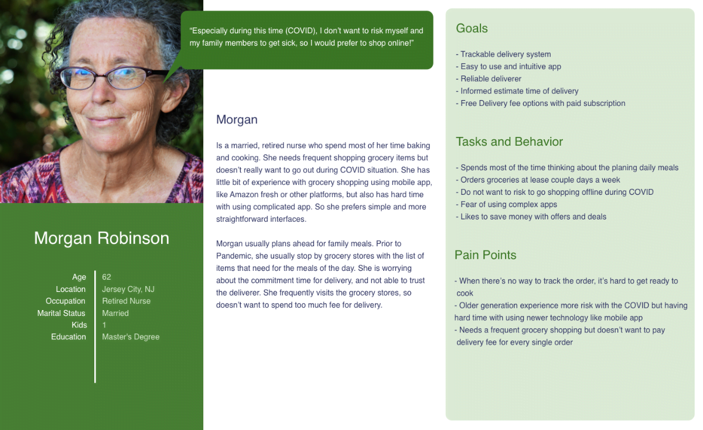
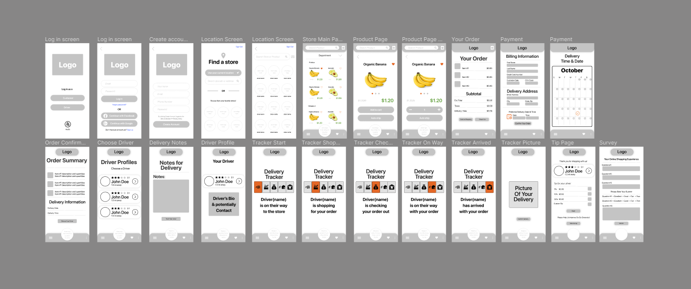
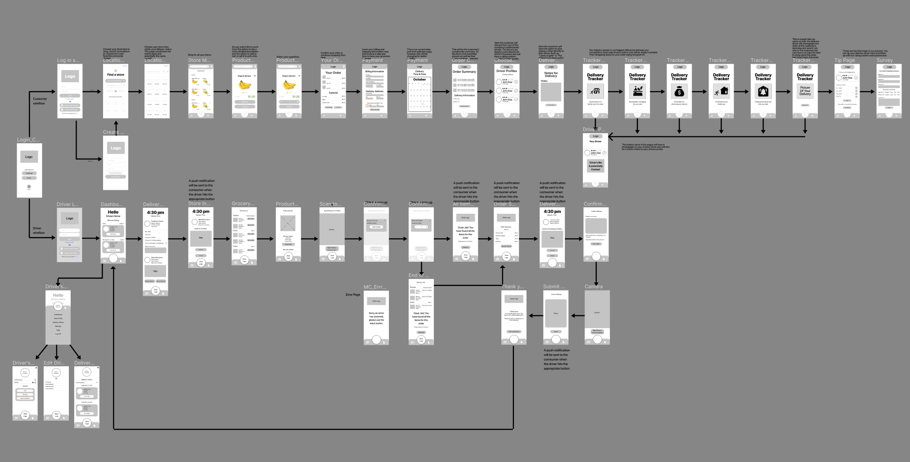
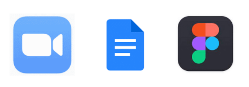

Introduction
In a crisis of pandemics, the online delivery system is surge more than ever. We all want to stay away from each other but seek a way to find our lives close to normal. GoGo Groceries, a grocery delivery service of users favorite stores with the advanced delivery-tracking system, is designed for both shopper and driver user types.
- JM V.
- Samuel K.
Problem
One of the largest problems online shoppers face with deliverable groceries in our research has been that deliveries aren’t trackable, don’t arrive at all, or are canceled last minute.
Role
It was a group project from the scratch. Within the 8 weeks, I worked as multiple roles include:
What I did
Process
Project Plan
We used trello as a project management tool and assigned team members to the tasks. This pm tool sort of worked as a blueprint of what our team supposed to do UX activities within the project timeline, which was 8 weeks.
UX Process
Our team adopted agile methodology in order to evolve the product by user feedback rapidly, without risking overall project scope and time. We used:
Research
Assumptions
Proto Persona
Design
Wireframe and Wireflow
I was focused on the customer side of the wireframe and wire flow. They both were based on the user flows and sketch(Balsamiq), and it's in low fidelity type without colors or much detail. Low fidelity wireframe is to see overall features and ideas and what users will interact with on each page.
  View Lo-fi Wireframe View WireflowHi-fi Prototype
Mid fidelity prototype is created with figma based on the user flow and simple style guide. In this stage, overall layout of pages are designed with placeholder images and some blurbs.
Customer Side
Driver Side
Usability Testing
Testing Methods
Unmoderated usability testing with interviewer and notetaker.
User Scenario for Customer
You will be looking at a grocery delivery app from the customer's perspective of shopping, who has used the app before. Meaning you have already signed up. You will be shopping at Harris Teeter.
User Scenario for Driver
You will be looking at a delivery app from the delivery driver's perspective of shopping and delivering groceries, who has used the app before. Meaning you have already signed up.
Usability Testing Script
Key Findings & Iteration
Navigation Function
During user research, we learned that the users did not like the idea of leaving the current app to navigate on the Driver side.
Key Decision:
Place the navigation function within the GoGo Groceries app. So the user will not have to leave the app and come back.
Progress Bar and Icons
In initial discussions and interviews, we came to the conclusion to change what our tracker looked like. This change allowed the tracker to become more user friendly with less typography and information needed.
Key Decision:
We added a large icon in the center of the page, along with a modified progress bar.
Delivery Tracking Option
From our user testing, we learned that not every user will want to track their deliveries and that we needed to add a confirmation page before the delivery tracker.
Key Decision:
We added an option for users who do not wish to track their deliveries on the Thank- You-Confirmation page.
Final Hi-fi Prototype
Customer Prototype
Driver Prototype
Next Step
Next, we would need the test the changes we made from our row of user testing to see if it resolves some of the issues we had.
- Restructuring the layout of the Item Quantity screen
- Keeping found items list in the grocery list